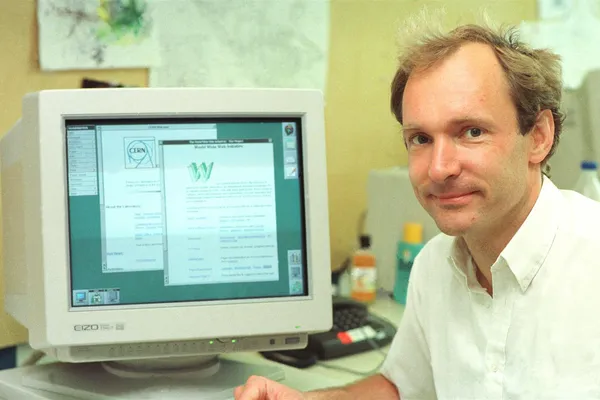
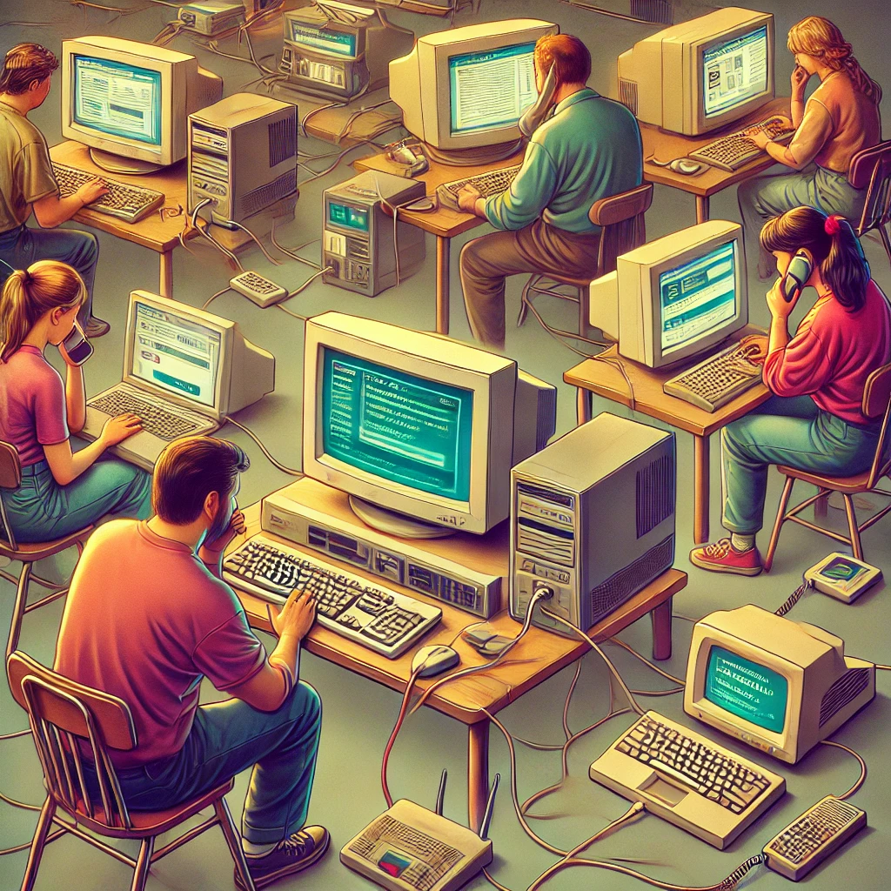
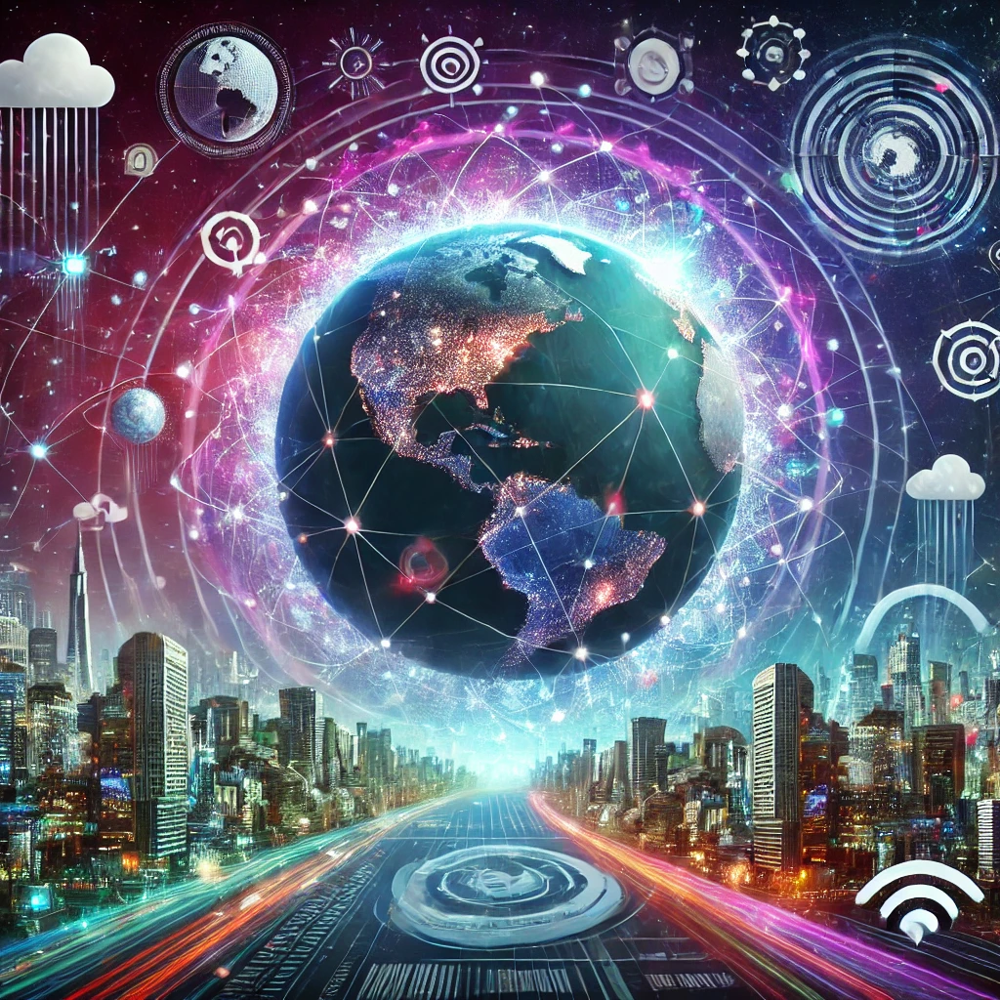

1. The Birth of the Internet
The story of the Internet begins in the 1960s, when ARPANET was developed by the U.S. Department of Defense to create a communication network capable of withstanding a nuclear attack. This early experiment in packet switching laid the groundwork for what would later become the Internet.

ARPANET’s decentralized design allowed data to be routed through multiple paths, ensuring that communication could continue even if parts of the network were compromised.
2. The Expansion of Global Connectivity
Throughout the 1970s and 1980s, new technologies like TCP/IP emerged, enabling different networks to connect with each other. By the early 1990s, the Internet as we know it today began to take shape with the invention of the World Wide Web by Tim Berners-Lee. This innovation transformed the Internet from a niche research tool into a platform accessible to the general public.
The introduction of graphical web browsers like Mosaic in 1993 allowed users to navigate websites easily, sparking a global revolution in how information was accessed and shared.
3. The Digital Revolution
The Internet's rapid growth in the 1990s and early 2000s led to a transformation of nearly every aspect of modern life. Email, e-commerce, social media, and search engines all became part of the digital ecosystem, changing how we communicate, shop, work, and entertain ourselves.
This period marked the rise of tech giants like Google, Amazon, and Facebook, companies that harnessed the power of the Internet to reshape industries and economies.
4. The Internet Today and Beyond
Today, the Internet has evolved into an essential part of daily life for billions of people. With advancements in mobile technology, artificial intelligence, and cloud computing, the Internet continues to drive innovation. The rise of social networks, streaming services, and the Internet of Things (IoT) has led to an interconnected world where nearly everything is accessible online.
Looking ahead, the Internet is expected to play a pivotal role in the development of emerging technologies like 5G, virtual reality, and blockchain, further transforming industries and societies.